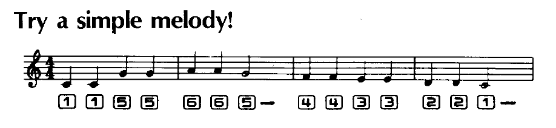

A calculator.
The CCCC calculator is a 16-bit postfix calculator that uses fractions as primitives. It includes two special operators, the reciprocal operator and the yet unnamed operator that is the mirror of a division, where instead of putting the first whole number over the second, it makes whole numbers of the numerator and denominator.
Basic operations
- 0-f numbers
- +-/* arithmetic
- &|<> bitwise
- tab toggle base
Stack operations
- ent push
- ! bsp pop
- % swap
- " duplicate
- ~ esc clear stack
The calculator plays notes inspired from the Casio VL-80, you can use it to play little tunes.
- Source, Uxntal
16O03— CCCC Uxn Release
incoming roms